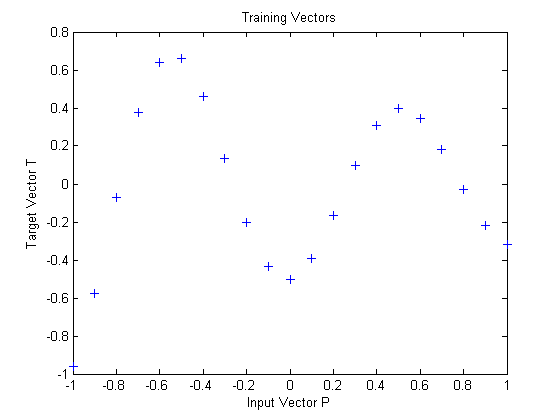
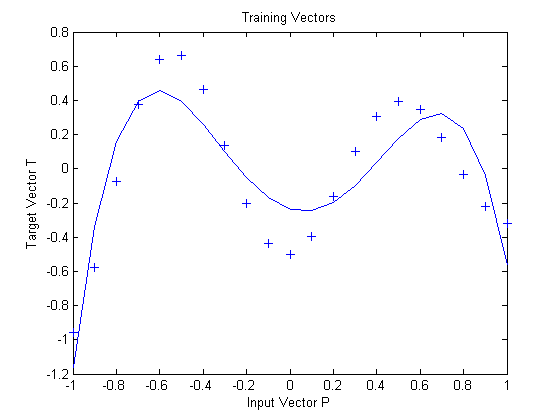

Radial Basis Overlapping Neurons
A radial basis network is trained to respond to specific inputs with target outputs. However, because the spread of the radial basis neurons is too high, each neuron responds essentially the same, and the network cannot be designed.
Copyright 1992-2002 The MathWorks, Inc. $Revision: 1.16 $ $Date: 2002/03/29 19:36:04 $
Define 21 inputs P and associated targets T.
P = -1:.1:1; T = [-.9602 -.5770 -.0729 .3771 .6405 .6600 .4609 ... .1336 -.2013 -.4344 -.5000 -.3930 -.1647 .0988 ... .3072 .3960 .3449 .1816 -.0312 -.2189 -.3201]; plot(P,T,'+'); title('Training Vectors'); xlabel('Input Vector P'); ylabel('Target Vector T');
The function NEWRB quickly creates a radial basis network which approximates the function defined by P and T.
In addition to the training set and targets, NEWRB takes two arguments, the sum-squared error goal and the spread constant. The spread of the radial basis neurons B is set to a very large number.
eg = 0.02; % sum-squared error goal sc = 100; % spread constant net = newrb(P,T,eg,sc);
NEWRB, neurons = 0, SSE = 3.69973
Warning: Rank deficient, rank = 3 tol = 2.1368e-014.
Warning: Rank deficient, rank = 4 tol = 2.1368e-014.
Warning: Rank deficient, rank = 5 tol = 2.1368e-014.
Warning: Rank deficient, rank = 5 tol = 2.1368e-014.
Warning: Rank deficient, rank = 5 tol = 2.1368e-014.
Warning: Rank deficient, rank = 5 tol = 2.1368e-014.
Warning: Rank deficient, rank = 5 tol = 2.1368e-014.
Warning: Rank deficient, rank = 5 tol = 2.1368e-014.
Warning: Rank deficient, rank = 5 tol = 2.1368e-014.
Warning: Rank deficient, rank = 5 tol = 2.1368e-014.
Warning: Rank deficient, rank = 5 tol = 2.1368e-014.
Warning: Rank deficient, rank = 5 tol = 2.1368e-014.
Warning: Rank deficient, rank = 5 tol = 2.1368e-014.
Warning: Rank deficient, rank = 5 tol = 2.1368e-014.
Warning: Rank deficient, rank = 5 tol = 2.1368e-014.
Warning: Rank deficient, rank = 5 tol = 2.1368e-014.
Warning: Rank deficient, rank = 5 tol = 2.1368e-014.
Warning: Matrix is close to singular or badly scaled.
Results may be inaccurate. RCOND = 1.701933e-019.
(Type "warning off MATLAB:nearlySingularMatrix" to suppress this warning.)
Warning: Rank deficient, rank = 5 tol = 2.2386e-014.
NEWRB cannot properly design a radial basis network due to the large overlap of the input regions of the radial basis neurons. All the neurons always output 1, and so cannot be used to generate different responses. To see how the network performs with the training set, simulate the network with the original inputs. Plot the results on the same graph as the training set.
Y = sim(net,P); hold on; plot(P,Y); hold off;